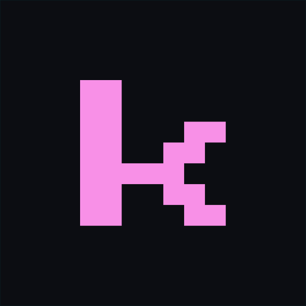
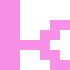
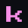

Architecture
From business goals to a system that scales — owned end to end, not just coded.
The living style guide. Every token below is driven by
design-system/tokens/tokens.css — the single source of truth
for the website, proposals, slides and every client touchpoint.
From business goals to a system that scales — owned end to end, not just coded.
Aligning teams, removing uncertainty and keeping delivery moving.
| Engagement | Focus | Status |
|---|---|---|
| Platform rebuild | Architecture | Shipped |
| Team enablement | Leadership | Active |
| AI delivery pilot | Engineering | Scoping |
Business goals before code. Where does ownership get lost?
A structure the team can confidently grow on.
Momentum, even when requirements aren't perfect.
/* one primary signal per screen */ .kd-btn--primary { background: var(--color-accent); color: var(--color-text-on-accent); border-radius: var(--radius-control); } .kd-btn--primary:hover { box-shadow: var(--kd-glow-pink); }
The actual Press Start 2P letterforms, outlined to vector — pixel-accurate
yet font-independent. Wordmark is always lowercase. Spec:
brand/04-logo.md.
Primary wordmark · Press Start 2P · pink on midnight
One-color variant · white on photography / dark



Subtle only — hover the elements below. Everything collapses under
prefers-reduced-motion. Spec: brand/05-motion.md.
Hover: 4px rise + pink glow. The one place glow reaches full strength.
Ship it
Faint by default — one per composition. Spec: brand/06-patterns.md.
.kd-horizon-line
Grid, diagonal and gravel-bike wallpapers in desktop, 4K and mobile sizes — as PNG and SVG. Share the gallery to let anyone preview and download them.